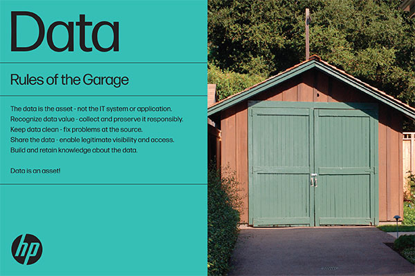
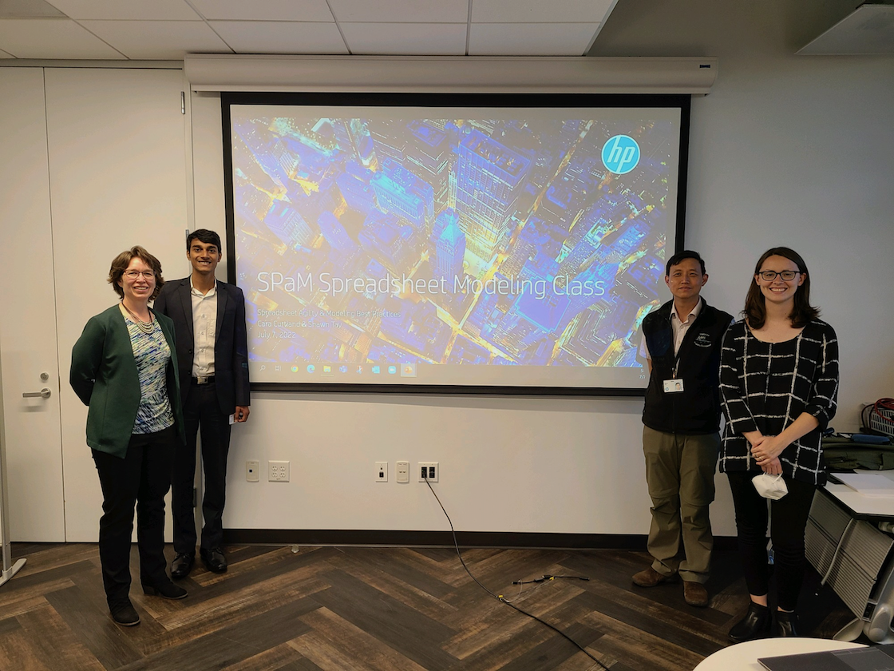
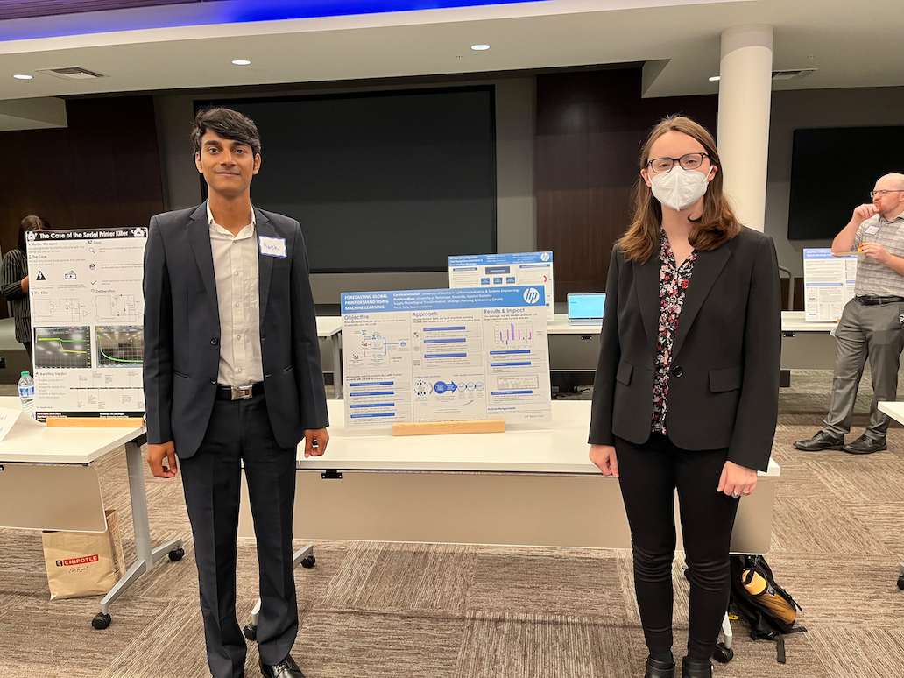

This summer was a fantastic experience for me. I spent three months toying with different machine learning models building large-scale forecasts for HP’s print business. I went in with hardly a year of experience in Python. I came out with a deep understanding of how Python works, internally and visually. From textbook examples of regression and time-series forecasting, I went to creating forecasts for thousands of products that HP produces worldwide.
My internship project was primarily focused on using machine learning to forecast the demand for printers worldwide. Caroline Johnston, my co-intern from the University of Southern California, and I created the models for better demand signal prediction. We developed models with LightGBM and tuned them with FLAML. To keep track of our numerous experiments, we used ML Flow.
HP manufactures and sells over 10,000 print-related products in over 170 countries. An accurate demand forecast is vital as demand forecasts drive supply planning. If we forecast higher than actuals, there is a cost of overage; if we predict too low, there is a cost of underage. We do not want too much inventory; we do not want too little, either. Besides this primary project, we also worked on two other projects: recording data quality issues and designing holistic metrics.
HP believes Data is an asset (Curtland et al., 2022). In 2021, the company gained the new imperative that values data as an asset and places a premium on data quality, access, and utility. This idea evolved from Data Science practitioners and was presented to the HP board and other audiences, including the 2021 Data Science and Knowledge Discovery Summit, an HP internal summit with 100+ presentations over three days.1

We created Python code that identified errors before they were fed into the model and logged them separately into a spreadsheet. The business and IT teams could use the error reports to fix the problems at the source.
Businesses care about different metrics than machine learning models. For example, the overage cost for HP is often less than that of underage, so planners prefer over- vs under-forecasting. However, the machine learning models’ loss function is usually symmetric. RMSE, WMAPE, and almost every metric would treat \(x\) units more similarly to \(x\) units less.
We (largely Caroline) also designed holistic metrics to synthesise business and ML accuracy results. We worked on automatic data quality error detection.
I worked with the Strategic Planning and Modelling team, abbreviated internally as SPaM.2
The SPaM team has an extensive experience in supply chain analytics. They have worked on numerous mission-critical projects over the last 40 years, and my task was no different. My manager, Barrett Crane, and my project mentors, Cara Curtland and Jerry Hwang, cared for us to succeed in the internship.3
Shawn Tay, another SPaMster, taught me ways to think about my career. He suggested that I look at my career as a project consultant Currently, I’m working on a project with HP where I have to maximise my contribution so that the client would be happy and satisfied. In the process, I should aim to upskill myself continuously. A better consultant would get a better project, making them better consultants. It is a continuous improvement loop.4
Other than that, I also had the fortune to learn from Chuck VanDam, Frederic Marie and Pedro Neto. They were working on a personal systems part optimisation project that I cannot share a lot about. Chuck’s ability to sharpen arguments in powerpoint slides is remarkable.
The SPaM team in Vancouver also organised an Excel workshop where we learnt interactive spreadsheet modelling. I also got the opportunity to talk about data manipulation in the session!

Our internship project got the first runners-up in the technical contribution category at the HP InternStellar Award competition.5 Here is Caroline and me with our final poster at the Interns Poster Fair.

I thoroughly enjoyed the work. The problem was intellectually stimulating, and while many of our models are beating the current forecast performance, we still have lots of ideas for further model improvement. Therefore, I’m continuing the work through the school year, working part-time with them!
Thank you, Meenal and Cara, for reviewing an early draft of this post. Your comments resulted in significant revisions and polished it.
From HP Inc. Advanced Analytics Powers Technology in the Service of Humanity:
↩︎Formalized in 2016, DSKD is composed of more than 3,000 members who hold biweekly knowledge sharing sessions and annual internal summits. The 2021 summit included 114 presentations over three days, culled from more than 500 submitted papers. Topics presented included proactive and predictive services, deep learning, reinforcement learning, data preparation and feature engineering, product improvement, machine learning (ML) and artificial intelligence (AI)-enabled automation, mixed-integer time-phased optimization, business process automation and much more.
The acronym was popular before spam emails became a problem. The word wasn’t in general lingo back when HP SPaM was founded in 1989.↩︎
Even today, there’s rarely a meeting with Jerry where I don’t learn something new about Python, Jupyter and ilk.↩︎
I believe this idea comes from a book that either Caroline or Shawn mentioned, but I don’t remember the name.↩︎
The winner developed a method that could print on any fiber rather quickly. I’m perfectly fine with the second position; he deserved it.↩︎